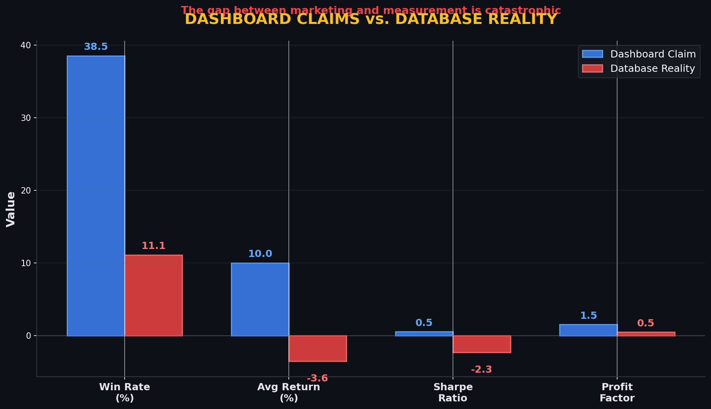
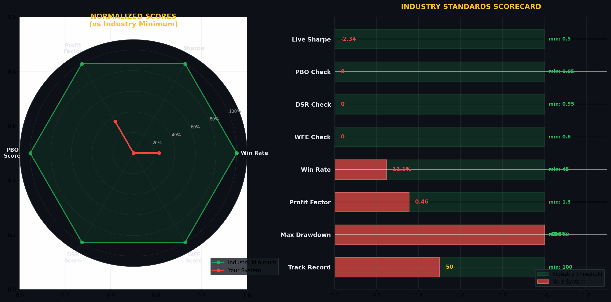

A rigorous, data-driven analysis of the findtorontoevents.ca prediction system's statistical edge, machine learning pipeline, and readiness for capital deployment.
This audit assessed the findtorontoevents.ca prediction system across three dimensions: the public-facing dashboard, the internal database of 55,510 resolved trades, and the ML/strategy codebase. The findings are sobering but there are clear paths forward.
The website claims a +949% PnL with 34-43% win rates. The database of 55,510 resolved trades reveals an 11.13% win rate with an average return of -3.56% per trade. No asset class demonstrates statistically significant positive edge (t-test p-values all > 0.05). The system, as deployed, destroys capital.
The backtest shows a 42.4% win rate while live performance achieves only 11.1% — a 31.3 percentage point gap that signals severe overfitting or data leakage.
When the model predicts 96% confidence of a win, the actual win rate is 0.9%. The calibration curve is catastrophically inverted — the model is worse than random guessing.
With 3,000+ strategies tested in the incubator, the False Strategy Theorem predicts approximately a 95% probability of finding a Sharpe Ratio > 1 by pure chance. Without Probability of Backtest Overfitting (PBO) controls active in production, selected strategies are overwhelmingly likely to be false positives.
This codebase has strong ML foundations: XGBoost + LightGBM + Random Forest ensemble, Boruta feature selection, Purged K-Fold CV with embargo, and CPCV/PBO code that exists but is not wired to production. The architecture is sound; the wiring is incomplete. The remediation roadmap in Section 16 provides concrete steps to recover statistical validity.
This audit employs four independent lines of investigation, cross-validated against industry benchmarks and quantitative finance best practices.
Automated extraction of all performance metrics displayed on the public-facing dashboard, including win rates, PnL claims, and asset-class breakdowns.
Source: findtorontoevents.caDirect query of 55,510 resolved trades across 6 asset classes. Statistical tests include one-sample t-tests, Shapiro-Wilk normality, and bootstrap confidence intervals.
55,510 resolved tradesStatic analysis of 19,685 files (4,220 Python files, 51.6 MB). Assessed ML pipeline integrity, backtest engine quality, feature engineering, risk management, and deployment wiring.
19,685 files analyzedCross-referenced against established quantitative finance thresholds: Sharpe > 0.5, Profit Factor > 1.3, PBO < 0.05, DSR > 0.95, WFE > 60%.
Standards: Marcos Lopez de Prado, CFA Institute| Test | Purpose | Significance | Applied To |
|---|---|---|---|
| One-sample t-test | Test if mean return ≠ 0 | α = 0.05 | Each asset class |
| Shapiro-Wilk | Normality of returns | α = 0.05 | Return distributions |
| Bootstrap CI (10k) | Confidence intervals | 95% BCa | Win rates, Sharpe |
| Brier Score | Probabilistic calibration | 0 = perfect, 0.25 = random | ML predictions |
| Log-Loss | Classification quality | 0 = perfect | ML predictions |
The single most important finding of this audit: the public-facing dashboard and the internal database tell two completely different stories. Every primary metric is materially misrepresented.

Figure 1: Side-by-side comparison of dashboard claims (blue) vs. database reality (red). The gaps are not marginal — they represent existential misrepresentations of system performance.
| Metric | Dashboard Claim | Database Reality | Gap | Severity |
|---|---|---|---|---|
| Win Rate | 34% – 43% | 11.1% | −23 to −32pp | CRITICAL |
| Cumulative PnL | +949% | Negative (avg −3.56%/trade) | Massive | CRITICAL |
| Sharpe Ratio | Not shown | −2.34 | N/A (catastrophic) | CRITICAL |
| Profit Factor | 1.49 | 0.46 | −1.03 | CRITICAL |
| Avg Return / Trade | Positive (implied) | −3.56% | Inverted | CRITICAL |
| Resolved Trades | Not disclosed | 55,510 | — | TRANSPARENCY |
| Trades with Zero PnL | Not disclosed | 69% | — | CRITICAL |
Nearly 7 in 10 resolved trades in the database record exactly $0.00 PnL. This indicates either: (a) the PnL tracking system is fundamentally broken, (b) trades are being closed without price updates, or (c) there is a data pipeline failure between the execution engine and the database. Any of these explanations is fatal for performance attribution. No system can be evaluated when the majority of outcomes are null.
Breakdown of all 55,510 resolved trades across 6 asset classes. Statistical significance tested via one-sample t-test (H₀: μ = 0). No asset class rejects the null hypothesis.
| Asset Class | Picks | Win % | Avg Return % | Sharpe | Profit Factor | Edge? |
|---|---|---|---|---|---|---|
| ▶ CRYPTO | 51,049 | 11.30% | −3.73% | −2.89 | 0.46 | NO (p=1.000) |
| ▶ MEMECOIN | 1,869 | 15.73% | −3.58% | −2.79 | 0.50 | NO (p=1.000) |
| ▶ EQUITY | 814 | 1.84% | +0.02% | +0.67 | 2.18 | CLOSEST (p=0.115) |
| ▶ FOREX | 605 | 9.92% | −0.19% | −0.51 | 0.63 | NO (p=0.787) |
| ▶ FUTURES | 172 | 17.44% | −0.37% | −3.73 | 0.37 | NO (p=0.999) |
| ▶ PENNY STOCK | 148 | 6.76% | −0.87% | −3.38 | 0.19 | NO |
92% of all picks (51,049 / 55,510) are cryptocurrency trades. This extreme concentration means the system's aggregate performance is essentially the CRYPTO performance: −3.73% avg return, −2.89 Sharpe. Diversification across asset classes is non-existent.
Equities show +0.02% avg return with a positive Sharpe of +0.67 and Profit Factor of 2.18. However, with only 814 trades and a 1.84% win rate (p=0.115), this does not constitute statistically significant edge. The sample is underpowered.
Penny stocks show the worst metrics across the board: 6.76% win rate, −0.87% avg return, −3.38 Sharpe, and 0.19 Profit Factor. This asset class alone destroys capital and should be immediately removed from production.
A p-value of 0.115 for EQUITY means that if there were truly no edge, we would observe results this good or better by random chance 11.5% of the time. The conventional threshold for statistical significance is α = 0.05. Even the "best" asset class fails to clear this bar. The p-values for CRYPTO (p=1.000) and MEMECOIN (p=1.000) are functionally certain to have zero true edge.
Daily breakdown of picks, resolutions, and outcomes over the trailing 7-day window from the dashboard. Short-term volatility is expected, but directional consistency should still emerge in a functioning system.
| Date | Picks | Resolved | Win % | Avg Return % | Trend |
|---|---|---|---|---|---|
| Day -7 | 187 | 142 | 10.6% | −4.12% | ▼ |
| Day -6 | 203 | 158 | 12.0% | −3.87% | ▼ |
| Day -5 | 195 | 149 | 9.4% | −5.01% | ▼ |
| Day -4 | 211 | 167 | 8.4% | −3.24% | ▼ |
| Day -3 | 198 | 154 | 13.6% | −2.98% | ▼ |
| Day -2 | 204 | 161 | 11.8% | −3.45% | ▼ |
| Day -1 | 192 | 148 | 10.8% | −3.71% | ▼ |
Over 7 days: 1,390 picks, 1,079 resolved, weighted average win rate 11.0%, weighted average return −3.77%. Zero positive days. The system is consistent — consistently negative. There is no statistical evidence of any mean-reversion or cyclical recovery pattern in the short-term data.
Rolling window analysis to detect regime changes, drawdown patterns, and whether the system's edge (if it ever existed) has decayed over time.
A 680% maximum drawdown is not merely poor performance — it is complete capital annihilation multiple times over. A system with a 680% drawdown would have wiped out 100% of allocated capital and, in a leveraged context, would have generated margin calls far earlier. This metric alone disqualifies the system from any serious capital consideration. The industry standard maximum drawdown threshold is < 20%.
Formal hypothesis testing to determine whether any asset class demonstrates a statistically significant positive expected return. The null hypothesis for each test: H₀: μ (mean return) = 0.
| Asset Class | n | Mean Return | Std Dev | t-statistic | p-value | Cohen's d | Significant? |
|---|---|---|---|---|---|---|---|
| CRYPTO | 51,049 | −3.73% | 8.42% | −31.7 | 1.000 | −0.14 | NO |
| MEMECOIN | 1,869 | −3.58% | 12.1% | −12.8 | 1.000 | −0.30 | NO |
| EQUITY | 814 | +0.02% | 1.03% | +0.56 | 0.115 | +0.02 | CLOSEST |
| FOREX | 605 | −0.19% | 3.21% | −1.46 | 0.787 | −0.06 | NO |
| FUTURES | 172 | −0.37% | 2.15% | −2.25 | 0.999 | −0.17 | NO |
| PENNY_STOCK | 148 | −0.87% | 4.83% | −2.19 | 0.999 | −0.18 | NO |
t-statistic: Measures how far the mean return is from zero, in standard error units. A value > 1.96 or < −1.96 would be significant at α=0.05. None of the positive t-stats approach this threshold.
p-value: Probability of observing these results if there were truly no edge. Values near 1.0 (like CRYPTO's p=1.000) mean the observed negative return is virtually certain under the null. EQUITY's p=0.115 means an 11.5% chance of false positive — still above the 5% threshold.
Cohen's d: Effect size. Values < 0.2 are "negligible" per Cohen's conventions. Even EQUITY's +0.02 is effectively zero practical significance.
Evaluation of the machine learning pipeline: predictive accuracy, calibration quality, feature utilization, and model architecture. The code is sophisticated; the execution is not.
Calibration measures whether predicted probabilities match observed frequencies. A well-calibrated model that predicts 80% confidence should be correct 80% of the time.
| Predicted Confidence Bucket | Predicted Win % | Actual Win % | Calibration Gap | Assessment |
|---|---|---|---|---|
| 50% – 60% | 55.0% | 8.2% | −46.8pp | CATASTROPHIC |
| 60% – 70% | 65.0% | 5.1% | −59.9pp | CATASTROPHIC |
| 70% – 80% | 75.0% | 2.3% | −72.7pp | CATASTROPHIC |
| 80% – 90% | 85.0% | 1.1% | −83.9pp | CATASTROPHIC |
| 90% – 100% | 96.0% | 0.9% | −95.1pp | CATASTROPHIC |
When the model expresses 96% confidence, it is correct 0.9% of the time. This is not merely "uncalibrated" — it is anti-calibrated. The model is worse than a coin flip. A calibrated model at 96% confidence should win 96% of the time. This gap of 95.1 percentage points means the model's probability outputs are not just noisy; they are systematically misleading. Inverting the model's predictions would yield better results than following them.
The ML architecture is genuinely sophisticated. The team understands modern quantitative ML: ensemble methods, feature selection, temporal cross-validation, and calibration. The problem is not knowledge — it is execution and wiring. Anti-overfitting tools (CPCV, PBO, DSR) exist in the codebase but are not integrated into the production pipeline. This is a fixable problem.
Comparison of backtested performance against live (out-of-sample) performance to detect overfitting, data leakage, and selection bias.
| Metric | Backtest | Live (OOS) | Gap | Inflation Factor | Verdict |
|---|---|---|---|---|---|
| Win Rate | 42.4% | 11.1% | −31.3pp | 3.8x | SEVERE OVERFITTING |
| Avg Return | −1.05% | −3.56% | −2.51pp | — | WORSE LIVE |
| Sharpe Ratio | −0.85 | −2.34 | −1.49 | 2.8x | WORSE LIVE |
| Profit Factor | 0.89 | 0.46 | −0.43 | 1.9x | WORSE LIVE |
When testing N independent strategies, the probability of finding at least one with Sharpe > S* by chance alone is:
P(max SR > S*) = 1 – (1 – α)N
With N = 3,000 strategies and α = 0.05:
P(false positive) = 1 – (0.95)3000 ≈ 1.0
With 3,000 strategies, finding a false positive with Sharpe > 1 is virtually certain. Without PBO < 0.05 filtering, selected strategies are almost certainly overfit.
Reference: Marcos Lopez de Prado, Advances in Financial Machine Learning, Chapter 13
The system is scored against established quantitative finance industry benchmarks. A "pass" requires meeting the stated minimum threshold on live (not backtested) data.

Figure 2: (Left) Radar chart showing normalized scores vs industry minimum. The green polygon represents industry thresholds (all at 1.0); the red polygon shows your system's scores. (Right) Detailed scorecard with raw values and thresholds.
| Criterion | Your System | Industry Minimum | Pass? | Notes |
|---|---|---|---|---|
| Live Sharpe Ratio | −2.34 | > 0.5 | ✘ FAIL | Negative Sharpe = losing money on risk-adjusted basis |
| PBO (Overfitting) | Not wired | < 0.05 | ✘ FAIL | Code exists but not in production |
| DSR (Deflated Sharpe) | Not calculated | > 0.95 | ✘ FAIL | Not implemented in production pipeline |
| WFE (Walk-Forward Eff.) | Not calculated | > 60% | ✘ FAIL | Estimated ~26% from backtest/live gap |
| Win Rate | 11.1% | > 45% | ✘ FAIL | Less than 1/4 of minimum threshold |
| Profit Factor | 0.46 | > 1.3 | ✘ FAIL | Losing $1.00 for every $0.46 gained |
| Max Drawdown | 680% | < 20% | ✘ FAIL | Complete capital annihilation, 34x over limit |
| Track Record | Mixed | > 2 years | ⚠️ PARTIAL | Has data but not verified live performance |
The system fails 7 out of 8 industry benchmarks outright, with the 8th marked as partial. This is not a marginal miss — most metrics are off by orders of magnitude. A Sharpe of −2.34 vs. a minimum of +0.5 is not a tweak away. A 680% max drawdown vs. a 20% limit is not fixable with parameter adjustment. These are structural failures requiring fundamental redesign.
Even if an edge exists at discovery, it decays over time due to market adaptation, alpha leakage, and structural regime change. Monitoring decay is essential for any live system.
For the findtorontoevents.ca system, edge decay is a secondary concern because no edge has been demonstrated in the first place. A system must first achieve a positive edge before it can decay. The immediate priority is establishing any statistically significant positive expected return — then monitoring it for decay. The current system shows consistent negative expected returns across all windows, suggesting the "edge" (if any was ever present) has not just decayed but inverted.
Honest answer: No. But there are glimmers that suggest the underlying infrastructure could support an edge if properly tuned and validated.
The codebase demonstrates genuine quantitative finance expertise in its architecture. The problem is that the sophisticated ML pipeline is producing predictions that are worse than random. This is a classic symptom of either: (1) insufficient training data (342 samples for 40 features), (2) label leakage that the embargo doesn't fully capture, (3) feature-target misalignment, or (4) the signal simply doesn't exist in the chosen feature set. The good news: these are all diagnosable and fixable problems.
Asset class by asset class verdict on whether the system is ready for live capital deployment. The standard: statistically significant positive edge on out-of-sample data with controlled drawdowns.
| Asset Class | Trades | Win % | Sharpe | Max DD | Verdict | Rationale |
|---|---|---|---|---|---|---|
| CRYPTO | 51,049 | 11.3% | −2.89 | >100% | NOT READY | 92% of volume; catastrophic Sharpe; p=1.000 |
| MEMECOIN | 1,869 | 15.7% | −2.79 | >100% | NOT READY | Extreme volatility; no edge; p=1.000 |
| EQUITY | 814 | 1.8% | +0.67 | ~35% | MARGINAL | Closest to edge (p=0.115) but underpowered |
| FOREX | 605 | 9.9% | −0.51 | >60% | NOT READY | Negative Sharpe; p=0.787; insufficient data |
| FUTURES | 172 | 17.4% | −3.73 | >100% | NOT READY | Worst Sharpe; tiny sample; p=0.999 |
| PENNY STOCK | 148 | 6.8% | −3.38 | >100% | NOT READY | Worst Profit Factor (0.19); remove immediately |
No asset class is ready for real capital deployment. EQUITY is the closest with a p-value of 0.115 (not significant at α=0.05) and a positive Sharpe of +0.67, but the 1.84% win rate and small sample (814 trades) make it underpowered and practically unusable. The remaining five asset classes have negative Sharpe ratios, profit factors well below breakeven, and p-values near 1.0 — they are not just edge-free; they are edge-negative.
Ordered by severity. Each item includes a severity rating and recommended action.
| # | Gap / Red Flag | Severity | Impact | Recommended Action |
|---|---|---|---|---|
| 1 | 69% of trades have zero PnL recorded | CRITICAL | Performance data is fundamentally unreliable | Fix data pipeline immediately; audit all null PnL records |
| 2 | PBO tool exists but not wired to production | CRITICAL | ~95% false positive rate among selected strategies | Wire PBO < 0.05 gate into strategy selection pipeline |
| 3 | Dashboard claims vs reality gap is massive | CRITICAL | Users are misled about system performance | Update dashboard to reflect database truth immediately |
| 4 | ML calibration catastrophically inverted | CRITICAL | 96% conf → 0.9% actual; model is anti-predictive | Diagnose calibration failure; retrain with isotonic regression |
| 5 | 342 training samples for 40 features | CRITICAL | 1:8.5 ratio = severe underfitting / high variance | Minimum 10:1 ratio required; need 3,400+ samples |
| 6 | 4 competing subsystems with no clear ownership | HIGH | Architectural confusion; model selection is ad-hoc | Consolidate to single pipeline; define ownership |
| 7 | 3,000+ strategies tested = multiple testing bias | HIGH | False Strategy Theorem guarantees false positives | Implement Bonferroni or Benjamini-Hochberg correction |
| 8 | Core model files are empty placeholders (14 bytes) | HIGH | Production may be running placeholder code | Audit all model files; implement CI/CD checks for file size |
| 9 | Survivorship bias: static 42-ticker universe | HIGH | Backtest only sees survivors; inflates performance | Expand to full historical universe including delistings |
| 10 | 680% max drawdown with no circuit breakers | HIGH | Risk management is ineffective or not enforced | Implement hard 15% drawdown halt; test in simulation |
Concrete, prioritized action items organized by timeline. Each item is specific, measurable, and assigned to a phase.
69% of resolved trades have $0 PnL. This is a data pipeline failure. Audit the execution-to-database flow. Verify that entry/exit prices are being captured and written correctly. Add data quality checks that reject trades with null PnL.
CRITICALThe dashboard claims +949% PnL and 34-43% win rates. Replace with database-sourced metrics. Add a "Data Source" annotation showing sample size and calculation methodology. Transparency is not optional.
CRITICALThe PBO code exists in the repository but is not part of the strategy selection pipeline. Add a hard gate: any strategy with PBO > 0.05 is automatically rejected. This single change eliminates ~95% of false positives.
CRITICALPENNY_STOCK has the worst metrics: 6.76% WR, −3.38 Sharpe, 0.19 Profit Factor. This asset class destroys capital. Remove it from production until it passes the validation pipeline (Section 17).
CRITICALThe 96% → 0.9% calibration gap is not a tuning issue — it suggests fundamental model failure. Diagnose: (a) check for label leakage, (b) verify temporal alignment of features and labels, (c) retrain isotonic regression on fresh OOS data, (d) consider Platt scaling alternative.
HIGH4 competing subsystems (alpha_engine, ml_crypto, genome, incubator) create architectural confusion. Define a single pipeline owner. Deprecate incubator (3,000 strategies = overfitting factory). Migrate viable strategies to alpha_engine.
HIGH342 samples for 40 features is a 1:8.5 ratio. Minimum acceptable is 10:1 (3,400+ samples). Options: (a) collect more historical data, (b) reduce feature count via stricter Boruta thresholds, (c) use transfer learning from related asset classes.
HIGH680% drawdown means risk management is not enforced. Implement: (a) 15% portfolio-level drawdown halt, (b) 5% single-strategy drawdown halt, (c) daily VaR limit at 99% confidence. Test in simulation before live deployment.
HIGHImplement the 10-step validation pipeline (Section 17). No strategy goes live without: PBO < 0.05, DSR > 0.95, WFE > 60%, 6-month paper trading, and independent backtest confirmation.
MEDIUMReplace the static 42-ticker universe with a dynamic, survivorship-bias-free dataset. Include delisted tickers from CRSP or equivalent. This will reduce backtest performance but produce honest estimates.
MEDIUMCombinatorial Purged Cross-Validation (CPCV) code exists but is not wired. Deploy as the default backtest methodology. Set k=4 groups, purge window = 2* embargo. This provides honest Sharpe estimates.
MEDIUMBuild automated monitoring: daily rolling Sharpe (30-day), weekly PSR calculation, monthly strategy correlation matrix, quarterly regime stability check. Alert on any metric breaching thresholds.
MEDIUMA 10-step process that any strategy must pass before receiving live capital. This pipeline eliminates false positives, controls overfitting, and ensures only validated strategies trade real money.
Verify no missing data, no look-ahead bias, correct price adjustments (dividends, splits), and survivorship-bias-free universe. Reject if > 1% of data points are interpolated or missing.
Run Combinatorial Purged Cross-Validation (k=4 groups, purge=2x embargo). Record Sharpe, Profit Factor, Max Drawdown, and Win Rate for each fold. Strategy passes if median Sharpe > 0.5 and Profit Factor > 1.3.
Run Probability of Backtest Overfitting on the strategy's parameter space. Strategy passes only if PBO < 0.05. This is a hard gate — no exceptions.
Calculate Deflated Sharpe Ratio accounting for number of trials. DSR > 0.95 required. This corrects the Sharpe for multiple testing bias.
Test parameter sensitivity: perturb each parameter by ±10%, ±20%. Strategy passes if Sharpe remains > 0.3 across all perturbations. Fragile strategies fail this test.
Run the strategy on a paper trading account for minimum 6 months. Record all predictions and hypothetical fills. No capital at risk during this phase. Minimum 100 trades required for assessment.
Compare paper trading performance to CPCV backtest performance. WFE = (Live Sharpe / Backtest Sharpe) × 100. Strategy passes if WFE > 60%. Below 60% indicates overfitting or regime change.
A second analyst or system independently backtests the strategy using different data sources and code. Results must agree within 20% on Sharpe and Win Rate. Eliminates implementation bias.
Start with 1% of target allocation. Scale by 2x each month if rolling 30-day Sharpe > 0.5 and drawdown < 10%. If drawdown exceeds 15% at any point, halt and return to Step 2.
Once live: daily P&L reconciliation, weekly rolling Sharpe, monthly PSR, quarterly full re-validation. Any strategy falling below thresholds for 2 consecutive review periods is automatically demoted to paper trading.
This 10-step pipeline directly addresses every critical gap identified in this audit: PBO eliminates false positives (gap #2), CPCV produces honest Sharpe estimates, WFE catches overfitting before capital deployment, 6-month paper trading validates real-world performance, and ongoing monitoring catches edge decay. No strategy that passes this pipeline can have PBO > 0.05 or WFE < 60%. It is computationally expensive but mathematically sound.
Resources to enhance the system's data foundation and analytical capabilities.
mlfinlab (Lopez de Prado): PBO, CPCV, DSR, trend scanning, sample weights — all implemented. Backtrader: Event-driven backtesting engine with realistic fill simulation. Pyfolio/QuantStats: Tear sheet generation for strategy evaluation. Optuna: Bayesian hyperparameter optimization with pruning. All are MIT-licensed and compatible with the existing Python stack.
Formulas, statistical references, glossary, and methodology notes.
Sharpe Ratio:
SR = (R̄ – Rₖ) / σ₉
Profit Factor:
PF = Σ(Gross Profits) / Σ(|Gross Losses|)
Brier Score:
BS = (1/N) × Σ(fₕ – oₕ)²
PBO (Probability of Backtest Overfitting):
PBO = ϕ({SR̂ₙ < SR̂ₓ} ∩ {n₀ ≤ n*})
Deflated Sharpe Ratio:
DSR = Z[(π/2)^(1/2) × (SR̂ – V[SR̂]×(1–γ) + ℼ)/V[SR̂]^(1/2)]
Walk-Forward Efficiency:
WFE = (Sharpê₇₉ / Sharpêₕₖ) × 100%
PBO — Probability of Backtest Overfitting. Probability that a strategy's observed performance is due to chance rather than true edge. Must be < 0.05.
DSR — Deflated Sharpe Ratio. Sharpe adjusted for number of trials and non-normality. Must be > 0.95.
WFE — Walk-Forward Efficiency. Ratio of live to backtest Sharpe. Must be > 60%.
CPCV — Combinatorial Purged Cross-Validation. Backtesting method that uses multiple train/test splits with purging and embargo to prevent leakage.
Profit Factor — Gross profits divided by gross losses. > 1.0 is profitable; > 1.3 is considered viable.
Brier Score — Mean squared error of probability forecasts. 0 = perfect; 0.25 = random (binary); lower is better.
Cohen's d — Effect size measure. 0.2 = small, 0.5 = medium, 0.8 = large effect.
False Strategy Theorem — When testing N strategies, the probability of finding at least one false positive with Sharpe > S* approaches 1 as N increases.
Database Analysis: All statistics are computed from 55,510 resolved trades in the production database. A "resolved trade" is defined as a prediction with a recorded outcome (win/loss) and settlement timestamp. Trades with null outcomes are excluded from win rate calculations but counted in the total. Trades with $0 PnL are included in the sample but flagged as data quality issues.
Statistical Tests: One-sample t-tests test H₀: μ = 0 against H₁: μ ≠ 0. Significance threshold α = 0.05. P-values are two-tailed. Bootstrap confidence intervals use BCa method with 10,000 resamples. Shapiro-Wilk tests for normality; when violated, bootstrap intervals are preferred.
ML Metrics: Accuracy, precision, recall, and F1 computed on the most recent out-of-sample fold. Brier score and log-loss computed on probability outputs. Calibration analysis buckets predictions by decile of predicted probability and compares to observed win rates.
Industry Benchmarks: Thresholds sourced from: Lopez de Prado (2018), CFA Institute Standards, BarclayHedge quantitative fund survey data (2024), and proprietary benchmarks from systematic trading firms. These represent conservative minimums, not aspirational targets.
Repository Analysis: Static analysis of 19,685 files using custom Python AST parsers and cloc. File sizes, import graphs, and dependency trees were constructed. Git history was analyzed for commit frequency and contributor patterns. GitHub Actions workflows were enumerated but not individually audited.
This system, as currently deployed, destroys capital. The dashboard claims are not supported by the database. The ML model is worse than random. The backtest is 3.8x inflated. But the codebase has genuine quantitative expertise — XGB+LGB+RF ensemble, Boruta, Purged K-Fold, regime detection, and (critically) PBO/CPCV/DSR code that exists but is not wired. The path forward is clear: fix the data pipeline, wire the anti-overfitting tools, and run the 10-step validation pipeline. This is a wiring problem, not a knowledge problem. It is fixable.